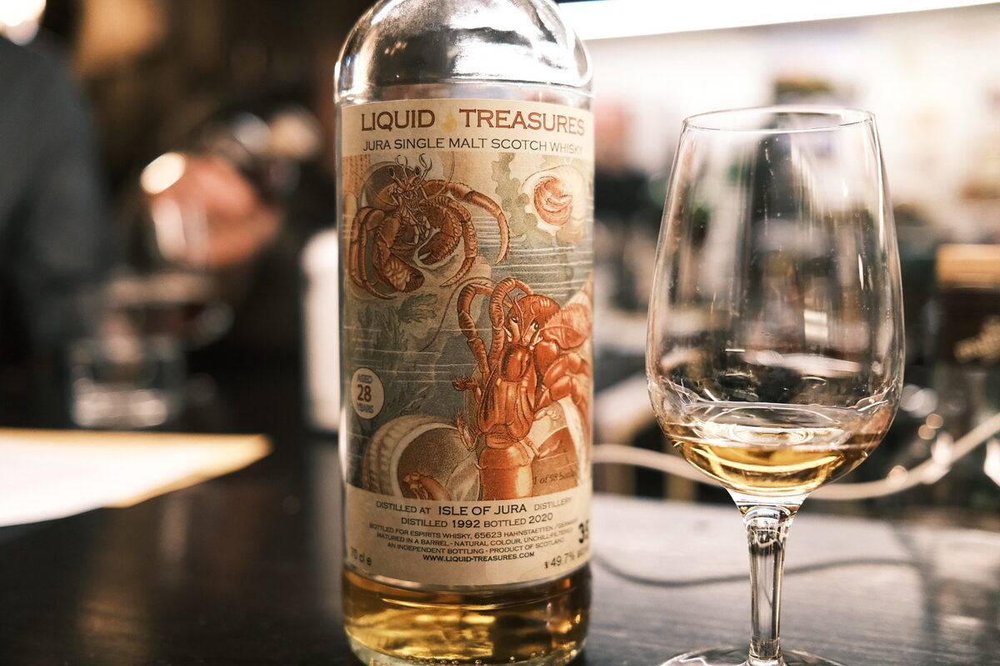

Jura 1992 Liquid Treasures 28 years 49.7% (barrel)
Alright, take two.
Colour Amber.
Nose Jelly snakes. Lime juice. A whack of oak. Fanta! Orange sherbet. Very estery, volatile. Nail polish remover. Toffee.
Palate Wow! Sweet toffee and orange sweets on the attack. Then, jumps off a cliff into dirty, earthy peat and smoke. Dark chocolate, cacao nibs. Woody. Some dried fruits. Texture is a bit of a letdown. Strawberry sweets.
Finish Moderate and fruity. Fruit jellies. A drop of orange juice. A little smoke and cacao nibs.
Comments What a palate! Roller coaster. Texture lets it down unfortunately. 83/100.

Posted by Dominic on 14 Jun 2021